Cell model¶
LBPM includes a whole-cell simulator based on a coupled solution of the Nernst-Planck equations with Gauss’s law. The resulting model is fully non-equilibrium, and can resolve the dynamics of how ions diffuse through the cellular environment when subjected to complex membrane responses. The lattice Boltzmann formulation is described below.
Nernst-Planck model¶
The Nernst-Planck model is designed to model ion transport based on the Nernst-Planck equation.
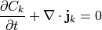
where
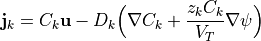
A LBM solution is developed using a three-dimensional, seven velocity (D3Q7) lattice structure for each species. Each distribution is associated with a particular discrete velocity, such that the concentration is given by their sum,
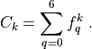
Lattice Boltzmann equations (LBEs) are defined to determine the evolution of the distributions
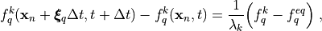
where the relaxation time
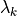
controls the bulk diffusion coefficient,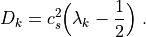
The speed of sound for the D3Q7 lattice model is
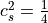
and the weights are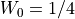
and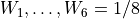
. Equilibrium distributions are established from the fact that molecular velocity distribution follows a Gaussian distribution within the bulk fluids,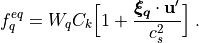
The velocity is given by
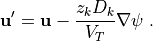
Keys for the Nernst-Planck solver are provided in the Ion section of the input file database. Supported keys are
use_membrane– set up a membrane structure (defaults totrueif not specified)Restart– read concentrations from restart file (defaults tofalseif not specified)number_ion_species– number of ions to use in the modeltemperature– temperature to use for the thermal voltage (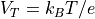
, where the electron charge is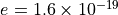
Coulomb)FluidVelDummy– vector providing a dummy fluid velocity field (for advection component)ElectricFieldDummy– vectory providing a dummy electric field (for force component)tauList– list of relaxation times to set the diffusion coefficient based on .IonDiffusivityList– list of physical ion diffusivities in units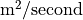
.IonValenceList– list of ion valence charges for each ion in the model.IonConcentrationList– list of concentrations to set for each ion.MembraneIonConcentrationList– list of concentrations to set for each ion inside the membrane.BC_InletList– boundary conditions for each ion at the z-inlet (0for periodic,1to set concentration)BC_OutletList– boundary conditions for each ion at the z-outletInletValueList– concentration value to set at the inlet (if not periodic)OutletValueList– concentration value to set at the outlet (if not periodic)
Gauss’s Law Model¶
The LBPM Gauss’s law solver is designed to solve for the electric field in an ionic fluid.
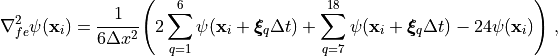
The equilibrium functions are defined as
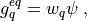
where
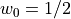
,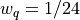
for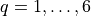
and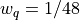
for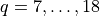
which implies that
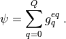
Given a particular initial condition for , let us consider application of the standard D3Q19 streaming step based on the equilibrium distributions
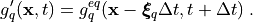
Relative to the solution of Gauss’s law, the error is given by
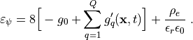
Using the fact that
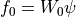
, we can compute the value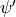
that would kill the error. We set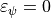
and rearrange terms to obtain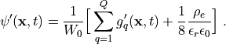
The local value of the potential is then updated based on a relaxation scheme, which is controlled by the relaxation time
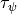
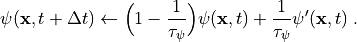
The algorithm can then proceed to the next timestep.
Keys to control the Gauss’s law solver are specified in the Poisson section of the input database.
Supported keys are:
Restart– read electric potential from a restart file (defaultfalse)timestepMax– maximum number of timesteps to run before exitingtau– relaxation timeanalysis_interval– how often to check solution for steady statetolerance– controls the required accuracyepsilonR– controls the electric permittivityWriteLog– write a convergence log
Membrane Model¶
The LBPM membrane model provides the basis to model cellular dynamics. There are currently two supported ways to specify the membrane location:
1. provide a segemented image that is labeled to differentiate the cell
interior and exterior. See the script NaCl-cell.py and input file NaCl.db as a reference for how to use labeled images.
IonConcentrationFile– list of files that specify the initial concentration for each ionFilename– 8-bit binary file provided in theDomainsection of the input databaseReadType– this should be"8bit"(this is the default)
provide a
.swcfile that specifies the geometry (see example input file below).
Filename– swc file name should be provided in theDomainsection of the input databaseReadType– this should be"swc"(required since"8bit"is the internal default)
Example input files for both cases are stored within the LBPM repository, located at example/SingleCell/
The membrane simply prevents the diffusion of ions. All lattice links crossing the membrane are stored in a dedicated data structure so that transport is decoupled from the bulk regions. Suppose that site
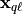
is inside the membrane and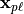
is outside the membrane, with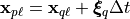
. For each species , transport across each link is controlled by a pair of coefficients,
, transport across each link is controlled by a pair of coefficients, 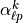
and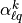
. Ions transported from the outside to the inside are transported by the particular distribution that is associated with the direction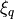
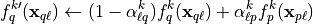
Similarly, for ions transported from the inside to the outside
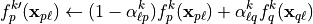
The basic closure relationship that is implemented is for voltage-gated ion channels. Let
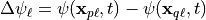
be the membrane potential across link . Since is determined based on the charge density,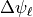
can vary with both space and time. The behavior of the gate is implmented as follows,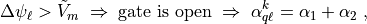
and
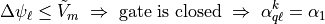
where
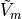
is the membrane voltage threshold that controls gate. Mass conservation dictates that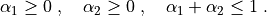
The rule is enforced based on the Heaviside function, as follows
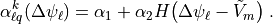
Note that different coefficients are specified for each ion in the model.
Keys for the membrane model are set in the Membrane section of the input file database. Supported keys are
VoltageThreshold– voltage threshold (may be different for each ion)MassFractionIn– value of when the voltage threshold is not metMassFractionOut– value of when the voltage threshold is not metThresholdMassFractionIn– value of when the voltage threshold is metThresholdMassFractionOut– value of when the voltage threshold is met
Example Input File¶
MultiphysController {
timestepMax = 25000
num_iter_Ion_List = 4
analysis_interval = 100
tolerance = 1.0e-9
visualization_interval = 1000 // Frequency to write visualization data
}
Ions {
use_membrane = true
Restart = false
MembraneIonConcentrationList = 150.0e-3, 10.0e-3, 15.0e-3, 155.0e-3 //user-input unit: [mol/m^3]
temperature = 293.15 //unit [K]
number_ion_species = 4 //number of ions
tauList = 1.0, 1.0, 1.0, 1.0
IonDiffusivityList = 1.0e-9, 1.0e-9, 1.0e-9, 1.0e-9 //user-input unit: [m^2/sec]
IonValenceList = 1, -1, 1, -1 //valence charge of ions; dimensionless; positive/negative integer
IonConcentrationList = 4.0e-3, 20.0e-3, 16.0e-3, 0.0e-3 //user-input unit: [mol/m^3]
BC_Solid = 0 //solid boundary condition; 0=non-flux BC; 1=surface ion concentration
//SolidLabels = 0 //solid labels for assigning solid boundary condition; ONLY for BC_Solid=1
//SolidValues = 1.0e-5 // user-input surface ion concentration unit: [mol/m^2]; ONLY for BC_Solid=1
FluidVelDummy = 0.0, 0.0, 0.0 // dummy fluid velocity for debugging
BC_InletList = 0, 0, 0, 0
BC_OutletList = 0, 0, 0, 0
}
Poisson {
lattice_scheme = "D3Q19"
epsilonR = 78.5 //fluid dielectric constant [dimensionless]
BC_Inlet = 0 // ->1: fixed electric potential; ->2: sine/cosine periodic electric potential
BC_Outlet = 0 // ->1: fixed electric potential; ->2: sine/cosine periodic electric potential
//--------------------------------------------------------------------------
//--------------------------------------------------------------------------
BC_Solid = 2 //solid boundary condition; 1=surface potential; 2=surface charge density
SolidLabels = 0 //solid labels for assigning solid boundary condition
SolidValues = 0 //if surface potential, unit=[V]; if surface charge density, unit=[C/m^2]
WriteLog = true //write convergence log for LB-Poisson solver
// ------------------------------- Testing Utilities ----------------------------------------
// ONLY for code debugging; the followings test sine/cosine voltage BCs; disabled by default
TestPeriodic = false
TestPeriodicTime = 1.0 //unit:[sec]
TestPeriodicTimeConv = 0.01 //unit:[sec]
TestPeriodicSaveInterval = 0.2 //unit:[sec]
//------------------------------ advanced setting ------------------------------------
timestepMax = 4000 //max timestep for obtaining steady-state electrical potential
analysis_interval = 25 //timestep checking steady-state convergence
tolerance = 1.0e-10 //stopping criterion for steady-state solution
InitialValueLabels = 1, 2
InitialValues = 0.0, 0.0
}
Domain {
Filename = "Bacterium.swc"
nproc = 2, 1, 1 // Number of processors (Npx,Npy,Npz)
n = 64, 64, 64 // Size of local domain (Nx,Ny,Nz)
N = 128, 64, 64 // size of the input image
voxel_length = 0.01 //resolution; user-input unit: [um]
BC = 0 // Boundary condition type
ReadType = "swc"
ReadValues = 0, 1, 2
WriteValues = 0, 1, 2
}
Analysis {
analysis_interval = 100
subphase_analysis_interval = 50 // Frequency to perform analysis
restart_interval = 5000 // Frequency to write restart data
restart_file = "Restart" // Filename to use for restart file (will append rank)
N_threads = 4 // Number of threads to use
load_balance = "independent" // Load balance method to use: "none", "default", "independent"
}
Visualization {
save_electric_potential = true
save_concentration = true
save_velocity = false
}
Membrane {
MembraneLabels = 2
VoltageThreshold = 0.0, 0.0, 0.0, 0.0
MassFractionIn = 1e-1, 1.0, 5e-3, 0.0
MassFractionOut = 1e-1, 1.0, 5e-3, 0.0
ThresholdMassFractionIn = 1e-1, 1.0, 5e-3, 0.0
ThresholdMassFractionOut = 1e-1, 1.0, 5e-3, 0.0
}